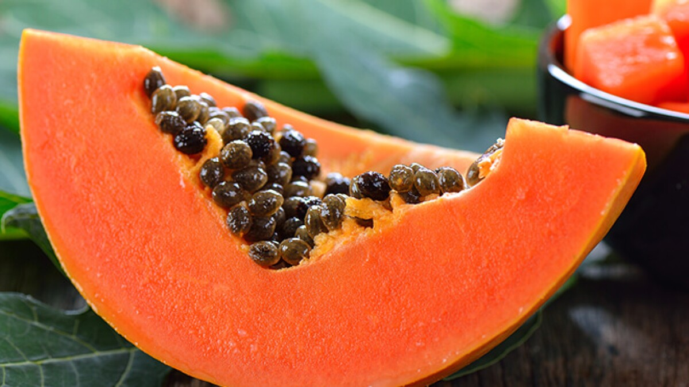
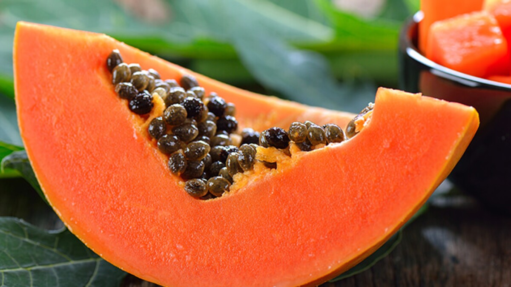

11 Top Watermelon Health Benefits That Nutritionists Say Are Backed by Promising Research


| Activity |
Date |
|---|---|
| First day to enrol for re-enrolling (continuing students) | 21 Nov 2022 |
| First day to enrol for new students (commencing students) | 05 Dec 2022 |
| Orientation | 20 Feb - 23 Feb 2023
Further information is available on Get Started |
| Lectures Commence (weeks 1-6) | 27 Feb - 07 Apr 2023 |
| Last day to enrol / add subjects yourself | 10 Mar 2023 |
| Name |
Health Benefit |
|---|---|
| Apple |
They're rich in fiber and antioxidants.Eating them is linked to a lower risk of many chronic
conditions, including diabetes, heart disease, and cancer.
|
| Banana |
Bananas contain many essential nutrients and may benefit weight loss, digestion, and heart health.
|
| Mango |
It's an antioxidant so it can help with oxidative stress in the body. It is really good source of
vitamin C, vitamine A, folate and are pretty high in fiber, which is beneficial for colon cancer
prevention, heart disease and weight control.
|
| Orange |
In addition to vitamin C, oranges have other nutrients that keep your body healthy. The fiber in
oranges can keep blood sugar levels in check and reduce high cholesterol to prevent cardiovascular
disease.
|
| Papaya  |
The possible health benefits of consuming papaya include a reduced risk of heart disease, diabetes,
cancer, aiding in digestion.
|
| Watermelon |
Watermelon is a naturally low-calorie package. It contributes key antioxidant nutrients that support
disease prevention and overall wellness.
11 Top Watermelon Health Benefits That Nutritionists Say Are Backed by Promising Research |
| Kiwi |
This tart fruit can support heart health, digestive health, and immunity.
|
| Grapes |
This fruit is a source of vitamins A, C, and K, beta-carotene, and potassium.
|
| Guava |
The guava fruit contains a variety of antioxidants that fight inflammation and improve heart health,
digestion, and overall well-being.
|
| Pineapple |
Pineapples are tropical fruits that are rich in vitamins, enzymes and antioxidants. They may help
boost the immune system, build strong bones and aid indigestion.
|